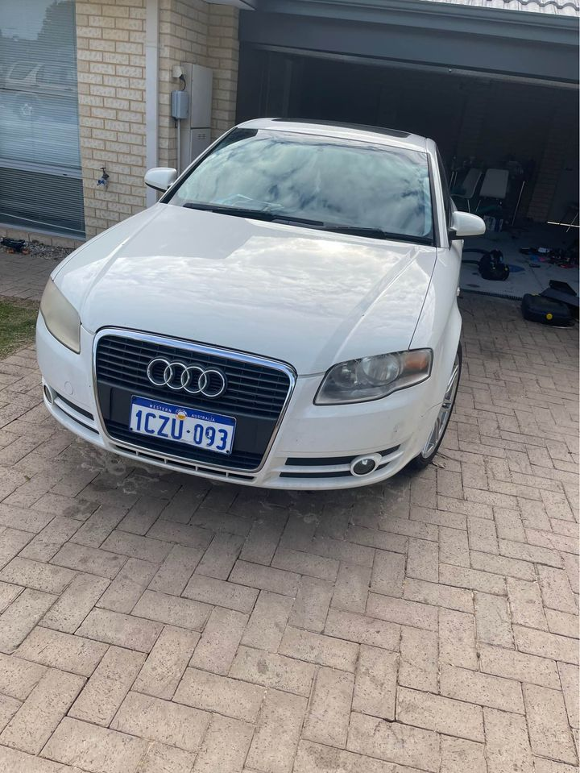

We love the Audi brand and all models because Audi is one of the strongest makes of vehicle that is available for purchase. It may very well be the best brand in the auto industry. This motivates us to pay maximum cash for cars that have the Audi name. If you are excited to get a cash quote for your machine, bring it to our scrap yards, or call us and we will visit you and do the assessment on the spot. Get the top cash for classic Audi trucks now.
Audi cars are a great choice for the buyers due to the fact the used car has got excellent reviews and reliability. You can make a wonderful choice if you are looking for a classic family car that is second to none and that won't break the bank too. As per the many long term owners who still care for their classic Audis, they know that when they take it to the dealership, they will pay a very expensive price just for the convenience of having a used car. This implies that when you buy a used Audi, you won't pay a huge sum of cash for the car. So, we encourage everyone to consider buying a car that is second to none and that will provide you and your family a decade of safety and security.

Get an awesome car The biggest advantage of getting a brand new Audi car is that you can be certain that it will be in its original state when you get it. It can be kept like that for quite a long period of time. In most cases, you can keep it for more than a decade. In the opposite case, you may have to keep it in its original shape for a period of 2 years. Our Audi Centre Perth sells new Audi cars When you get an Audi, you get more than a brand. You also get a brand-new car and you get a car that has been updated with all of its features. Moreover, you get an honest warranty on it, meaning that if something were to go wrong with it, you can get it repaired immediately. The downside to all this is that the depreciation of your car in the future may be much higher.
There are certain basic inspection items that the Audi dealer will check when the vehicle is on the lot. You will have to identify if the car has been repaired. This will depend on the model in particular and can be checked through a CARS SA inspection certificate. Do not ignore if you notice any fault. The car is a unique car that was meant to be protected with the true company name and brand. Once you have agreed on a price for a car you want to buy, you will need to bring the purchase agreement over to the scrap yard to get a cash quote on your Audi. You can get cash for classic Audi trucks and also make your own Audi cars. We can provide a vehicle inspection to give you a purchase price before your cash is transferred to you.
For those who wish to drive a 2017 Audi Q3 with the pride and the joy of driving the Audi brand, you may just need to do a search online for an Audi trucker seller. Most definitely, you will find Audi brand cars that you can acquire for a good deal, as a result, if you are still searching for some possible choices, then you can find this site, where you can find the closest dealers and car sellers and in addition the lowest prices for Audi cars. You can buy a 2017 Audi Q3 and even some other fine models and this site provides the lowest prices for all of them.
Everywhere that there are auto dealers, there is the Audi dealer. They buy, fix and sell all kinds of new and used vehicles. We are proud to be the best auto dealer in Perth, Australia. There are numerous cars from Audi that are reliable and used vehicles of the brand. We can offer you the best prices and get all of your cars on time. We don’t charge you any commission if you get an Audi that is worth hundred thousands or thousand dollars. Our people are capable and very knowledgeable about this amazing brand.
Address:103 Sheffield Rd, Welshpool WA 6106
Phone: (08) 9358 1392